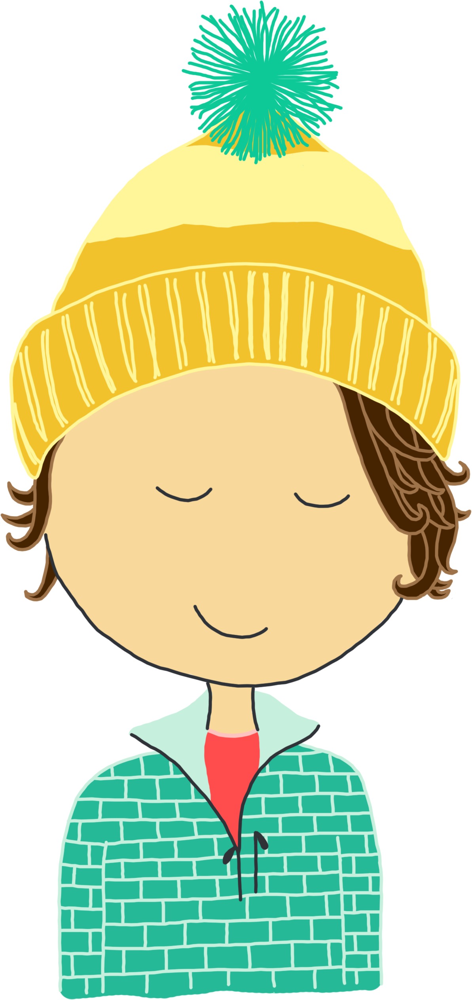
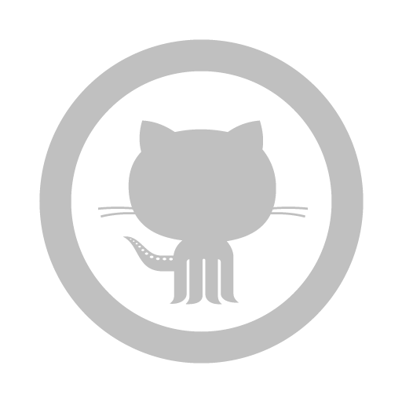

Carolyn Vlach
programmer. ultimate player. sweater enthusiast.



University of Michigan September 2010 - April 2015
Ann Arbor, MI GPA: 3.8/4.0
B.S. Computer Science, Discrete and Algorithmic Methods, + Spanish

La Universidad Nacional de Cuyo Fall 2012
Mendoza, Argentina
Study Abroad Experience
Profitability of Hawaii June 2014 - August 2014
Honolulu, Hawaii
Web Development Summer Intern
Integrated and customized document signature / signature replay functionality from the company’s existing mobile app into the company’s web app. App is written in HTML and JavaScript and supported in Chrome, Internet Explorer, and Firefox.
Contact: Bill White - bwhite@poh.com
Computer Science Engineering August 2013 - Present
University of Michigan College of Engineering
Instructional Aid for EECS 183: Elementary Programming Concepts
Duties include preparing and leading a weekly hour-long discussion, holding office hours to assist students with assignments and understanding course concepts, creating projects, attending weekly staff meetings, grading examinations, and supporting course faculty.
Contact: Dr. Mary Lou Dorf - mdorf@umich.edu
Educational Theatre Company March 2013 - Present
University of Michigan Office of New Student Programs
Actor
Work collaboratively in small ensembles to prepare theater productions focusing on relevant issues at the University of Michigan to be performed for fellow students.
Contact: Callie McKee - csmkee@umich.edu